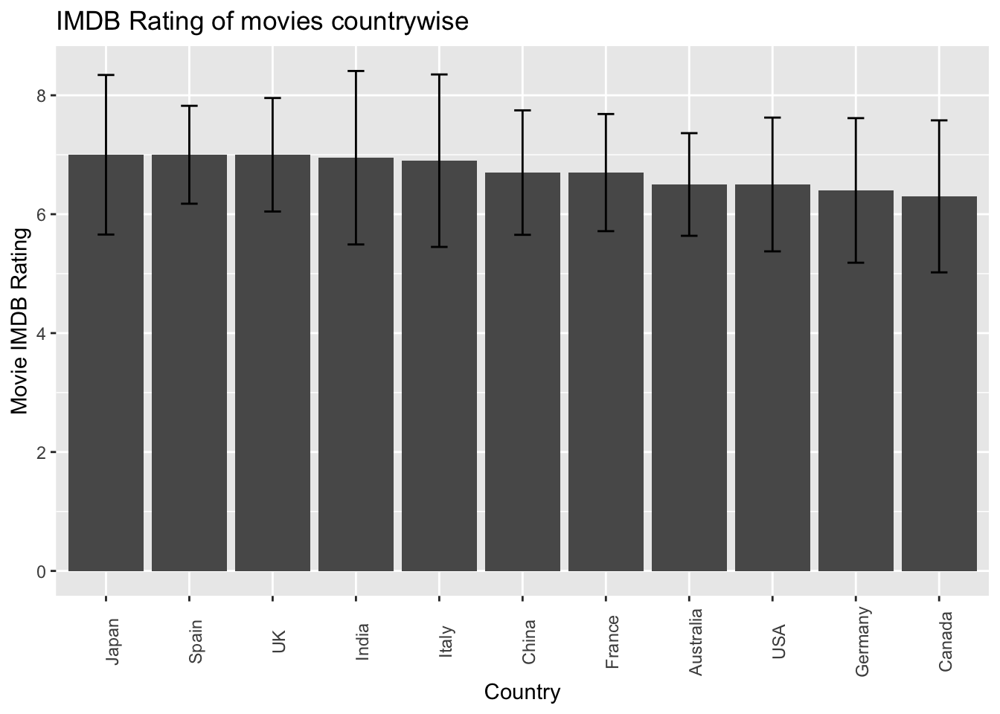

library(tidyverse)
library(ggplot2)
library(dplyr)
library(Amelia)
knitr::opts_chunk$set(echo = TRUE, warning=FALSE, message=FALSE)Final Project: Poobigan Murugesan
final_Project
poobigan murugesan
IMDB movie data analysis
Introduction
In the realm of the film industry, the IMDB rating serves as a significant indicator of a movie’s overall reception and public opinion. As one of the most popular platforms for movie ratings and reviews, a high IMDB rating often attracts new viewers and influences their decision to watch a particular film. Consequently, understanding the factors that contribute to a movie’s rating is crucial for filmmakers, industry professionals, and movie enthusiasts alike. This research project aims to delve into the influence of various factors on a movie’s rating, including movie duration, movie director, actors, and social media presence.
In this research project, we begin by addressing the following research questions using the “IMDB 5000 Movie Dataset” available on Kaggle. However, as we uncover intriguing patterns and trends along the way, we remain open to exploring other interesting findings and delving into the underlying reasons behind them.
How does the popularity of movies on social media, measured by the number of Facebook likes, relate to their IMDb scores?
There could be a positive correlation between the popularity of movies on social media (number of Facebook likes) and their IMDb scores. Movies that are well-received and highly rated on IMDb may generate more buzz and engagement on social media platforms, resulting in a higher number of Facebook likes. Conversely, movies with low IMDb scores may not attract as much attention and may have fewer Facebook likes.
Does the duration of a movie impact its popularity?
Intuitively, one might speculate that longer movies could potentially captivate audiences more and provide a more comprehensive storytelling experience. However, it is necessary to explore whether there exists a correlation between a movie’s duration and its popularity, as measured by the IMDB rating. By examining the dataset, we can draw insights into whether longer or shorter movies tend to receive higher ratings and determine the significance of movie duration as a factor in a movie’s success.
Does it matter to a movie if its cast is popular among Facebook users?
With the increasing prominence of social media platforms, the impact of actors’ popularity on platforms like Facebook has gained attention. It is worth investigating whether a movie’s IMDB rating correlates with the popularity of its cast among Facebook users. By leveraging the dataset, we can discern whether movies featuring actors who enjoy a substantial following on Facebook tend to receive higher ratings, thus highlighting the potential influence of social media presence on a movie’s reception.
What country do the most popular movies belong to?
Movies produced in different countries often reflect unique cultural perspectives and storytelling techniques. Exploring the dataset allows us to identify the countries associated with the most popular movies based on their IMDB ratings. This analysis can provide insights into whether certain regions or film industries exhibit a higher propensity for producing highly regarded films, highlighting the influence of cultural context on a movie’s success.
Does the presence of a particular actor boost a movie’s ratings?
The influence of actors on a movie’s success has long been recognized, but it remains intriguing to ascertain whether the presence of specific actors correlates with higher IMDB ratings. By examining the dataset, we can determine whether movies featuring certain actors tend to receive higher ratings and evaluate the impact of individual actors on a movie’s reception.
Dataset
The “5000” in the IMDB 5000 dataset refers to the number of movies included in the dataset. It does not necessarily mean that these are the 5000 most popular movies, randomly selected movies, or movies reviewed most often. The IMDB 5000 dataset is a collection of approximately 5000 movies available on the IMDb website at the time the dataset was created. The selection of movies is not based on popularity or review frequency alone. Instead, it aims to provide a diverse sample of movies from different genres, time periods, and other factors. The dataset includes a mix of well-known movies, critically acclaimed films, commercially successful titles, and lesser-known films. It encompasses a broad range of movies to provide a representative sample for analysis and research purposes.
Reading in the dataset
movie_data <- read.csv("PoobiganMurugesan_FinalProjectData/movie_metadata.csv")
dim(movie_data)[1] 5043 28head(movie_data)In this movie dataset(5043 movies), each row represents an individual movie, making it the case for analysis. The dataset includes various key variables that provide information about the movies and their characteristics. Let’s examine the essential aspects of this dataset:
movie_title: This variable contains the title of each movie, serving as a unique identifier for the films under consideration.
duration: It represents the duration of the movies in minutes, indicating the length of each film.
director_name: This variable captures the name of the director associated with each movie, providing insights into the individuals responsible for overseeing the creative direction of the films.
actor_1_name, actor_2_name, actor_3_name: These variables identify the primary and other actors starring in the movies, offering information about the cast members involved in each film.
genres: It captures the categorization of movies into various genres, such as animation, comedy, romance, horror, sci-fi, action, and family, providing insights into the different thematic elements and storytelling styles.
title_year: This variable indicates the year in which each movie was released, allowing for temporal analysis and understanding of trends in the film industry over time.
country: It represents the country where each movie was produced, providing information about the geographic origins and cultural influences associated with the films.
Checking for missing values
missmap(movie_data, main = "Missing values vs observed", margins = c(10, 10), gap.xaxis = 0)na_count <-sapply(movie_data, function(y) sum(is.na(y)))
na_count$name<-rownames(na_count)
na_count <- data.frame(na_count)
na_countThe dataset contains missing values in columns such as budget, gross, and aspect ratio, which are not relevant to our study. Furthermore, there are a few missing values in the Facebook likes columns; however, we can safely disregard them as they will be automatically excluded from our plots. This exclusion of missing values will have minimal impact on our analysis and interpretation, allowing us to focus on the available data points without compromising the overall validity and insights of our study.
The table provided below displays the median, mean, and standard deviation (represented by the column name suffixes _mean, _median, and _sd, respectively) for each of the numeric columns:
movie_data %>%summarise_if(is.numeric, list(mean = mean,median = median,sd = sd), na.rm = TRUE) %>% head()The table below presents the class frequency for each of the non-numeric columns. Some columns have been omitted due to the presence of a large number of distinct values:
movie_data %>%count(country,sort = TRUE)movie_data %>%count(language, sort = TRUE)Visualization
The bar graph presented illustrates the distribution of IMDB ratings within the dataset over different years. The variable utilized for this visualization is ‘title_year,’ representing the year of release for each movie. Based on the graph, it is evident that a significant portion of the movies in the dataset were released during the time period spanning from 2000 to 2010.
ggplot(data = movie_data,aes(x = title_year)) + geom_bar()+ scale_fill_manual(values=c("#69b3a2"))+
ggtitle("Distribution of IMDB rating of movies over the years")The provided plot displays the relationship between the IMDB score of a movie and the number of likes on its corresponding Facebook page.
ggplot(data = movie_data, aes(x = movie_facebook_likes, y = imdb_score)) + geom_point(alpha = 0.4)+
geom_smooth() +
ggtitle("Likes on movie facebook page vs IMDB rating")The trendline in the scatterplot of IMDb rating and the number of Facebook likes indicates a generally increasing or non-decreasing pattern, suggesting a positive relationship between these variables.This suggests that movies with higher critical acclaim and perceived quality are more likely to garner popularity and engagement on social media. The correlation between IMDb rating and Facebook likes implies that the perceived quality of a movie influences its appeal and popularity on the Facebook platform.
However, we also observe that there are movies that receive a high number of likes on Facebook, despite having low IMDb scores. This raises the question of why this might be the case, lets explore the possible explanations behind this trend.
median_likes <- median(movie_data$movie_facebook_likes, na.rm = TRUE)
median_imdb <- median(movie_data$imdb_score, na.rm = TRUE)
median_imdb[1] 6.6# Filter the dataset for movies with Facebook likes above the median and IMDB score below
filtered_data <- movie_data %>% filter(movie_facebook_likes > median_likes)%>%
filter(imdb_score<median_imdb)
genre_counts <- filtered_data %>%
count(genres)%>%
arrange(desc(n))
top_20_counts <- head(genre_counts, 20)
ggplot(top_20_counts, aes(x = genres, y = n)) +
geom_bar(stat = "identity", fill = "blue") +
ggtitle("Top 20 Genres of Movies with Low IMDb Scores and High Facebook Likes") +
xlab("Genre") +
ylab("Count") +
theme(axis.text.x = element_text(angle = 45, hjust = 1))Comedy movies stand out as the frontrunners among films with low IMDb scores but high Facebook likes. This discrepancy can be attributed to the differing audiences and their respective priorities on these platforms. IMDb caters primarily to movie enthusiasts and critics who emphasize the quality and technical aspects of films, resulting in lower ratings for comedy movies that may be perceived as lacking in critical depth. On the other hand, Facebook attracts a broader audience, including casual moviegoers who prioritize entertainment value and personal preferences over critical evaluation. Comedy movies excel in providing light-hearted and humorous content that resonates with a wider audience, making them popular on Facebook despite their lower IMDb scores. Their ability to engage and entertain viewers, along with their relatability and memorable comedic moments, contributes to higher social sharing and virality.
To address the research question, “What country do the most popular movies belong to?” I created a bar graph where the x-axis represents different countries, and the y-axis represents the median IMDB score. To obtain a more accurate representation, I have modified the analysis by selecting the top 10 countries with the highest review count. By focusing on countries with a substantial number of reviews, we can ensure a more reliable and meaningful result. The resulting graph displays the median IMDB score for each of these 10 countries, providing a more realistic assessment of the countries associated with the most popular movies.
country_summary <- movie_data %>%
group_by(country) %>%
summarise(med = median(imdb_score),
sd = sd(imdb_score),
n_ = n()) %>% top_n(10, n_)
barPlot <- ggplot(country_summary, aes(reorder(country, -med), med)) +
geom_col() +
geom_errorbar(aes(ymin = med - sd, ymax = med + sd), width=0.2)
barPlot + labs(y="Movie IMDB Rating", x = "Country") + theme(axis.text.x=element_text(angle=90))+
ggtitle("IMDB Rating of movies countrywise")
Based on the bar plot of average rating by country, there is no clear evidence to support the claim that some countries produce more highly rated movies than others. The average ratings across different countries appear to be relatively similar, without any significant variations indicating a strong association between country and movie ratings.
To investigate the research question, “Does the duration of a movie impact its popularity?” I have created a line graph that depicts the relationship between movie duration and IMDB rating. To facilitate analysis and draw meaningful conclusions, I have categorized the movies in the dataset based on their language.
ggplot(subset(movie_data, language %in% c('English', 'Cantonese', 'French','German', 'Japanese', 'Italian', 'Mandarin', 'Spanish')), aes(x=duration, y=imdb_score, group=1)) + geom_smooth() + facet_wrap(vars(language)) + geom_point(alpha = 0.1)+
ggtitle("Movie duration vs IMDB rating language-wise")Based on the observations from the presented plots, it is evident that the duration of a movie does not significantly influence its popularity in the English and Italian languages. However, for other languages, there appears to be an increase in ratings with longer durations.
In an attempt to address the research question, “Does it matter to a movie if its cast is popular among Facebook users?” I have created two plots to explore the relationship between the popularity of cast members on Facebook and the IMDB rating of the movie.
ggplot(data=movie_data, aes(x=actor_1_facebook_likes, y=imdb_score, group=1)) + geom_smooth()+
ggtitle("Likes on lead actor's facebook page vs IMDB rating")ggplot(data=movie_data, aes(x=actor_2_facebook_likes, y=imdb_score, group=1)) + geom_smooth()+
ggtitle("Likes on supporting actor's facebook page vs IMDB rating")ggplot(data=movie_data, aes(x=actor_3_facebook_likes, y=imdb_score, group=1)) + geom_smooth()+
ggtitle("Likes on casts' facebook page vs IMDB rating")Upon analyzing the plots, an intriguing similarity in trends becomes apparent. Both plots demonstrate a similar variation in the IMDB rating as the number of Facebook likes increases for either Actor 1 or Actor 2. This suggests a potential correlation between the popularity of these cast members on Facebook and the movie’s IMDB rating. The parallel trends observed in both plots lend support to the notion that the popularity of specific actors among Facebook users can indeed impact a movie’s rating on IMDB.
In our effort to explore whether the presence of an actor boosts a movie’s ratings, we have generated visual plots focusing on the top 15 most popular actors listed as Actor 1, Actor 2, or Actor 3 in movies.
country_sum <- movie_data %>%
group_by(actor_1_name) %>%
summarise(med = median(imdb_score),
sd = sd(imdb_score),
n_ = n()) %>% top_n(15, n_)
ggplot(country_sum, aes(reorder(actor_1_name, -med), med)) +
geom_col() + theme(axis.text.x=element_text(angle=90)) +
geom_errorbar(aes(ymin = med - sd, ymax = med + sd), width=0.2) + ggtitle("Top 15 actors listed as Actor 1, ranked by their median IMDB rating of the movies") +
xlab("Actor") + ylab("IMDB Median Rating")country_sum <- movie_data %>%
group_by(actor_2_name) %>%
summarise(med = median(imdb_score),
sd = sd(imdb_score),
n_ = n()) %>% top_n(15, n_)
#Applying a filter here since for some reason an empty actor name row pops up even though both actor_2_name and imdb_score have no NA values
ggplot(country_sum %>% arrange(desc(med)) %>% filter(row_number() != 2), aes(reorder(actor_2_name, -med), med)) +
geom_col() + theme(axis.text.x=element_text(angle=90)) +
geom_errorbar(aes(ymin = med - sd, ymax = med + sd), width=0.2) + ggtitle("Top 15 actors listed as Actor 2, ranked by their median IMDB rating of the movies") +
xlab("Actor") + ylab("IMDB Median Rating")country_sum <- movie_data %>%
group_by(actor_3_name) %>%
summarise(med = median(imdb_score),
sd = sd(imdb_score),
n_ = n()) %>% top_n(15, n_) %>%
filter(row_number() != 4)
#Applying a filter here since for some reason an empty actor name row pops up even though both actor_3_name and imdb_score have no NA values
ggplot(country_sum %>% arrange(desc(med)) %>% filter(row_number() != 4), aes(reorder(actor_3_name, -med), med)) +
geom_col() +
theme(axis.text.x = element_text(angle = 90)) +
geom_errorbar(aes(ymin = med - sd, ymax = med + sd), width = 0.2) +
ggtitle("Top 15 actors listed as Actor 3, ranked by their median IMDB rating of the movies") +
xlab("Actor") + ylab("IMDB Median Rating")Notably, several names, such as Morgan Freeman, Steve Buscami, and Bruce Willis, appear across multiple plots. This observation suggests that the inclusion of these actors in a movie may indeed have an impact on its IMDB rating. The recurring presence of these actors in multiple plots serves as evidence that their involvement in a movie is potentially associated with higher ratings, lending support to the hypothesis that the presence of certain actors can positively influence a movie’s overall reception.
Conclusion
As an avid user of IMDB ratings for movies, this research project has been particularly intriguing. The IMDB 5000 Movie dataset has proven to be relatively clean, albeit with a few missing values. Throughout this project, the focus has been on visualizing various plots to explore the influence of factors such as movie directors, actors, Facebook likes, and movie duration on the popular opinion of movies, as indicated by their IMDB scores. While grappling with a large number of rows and categorical variables presented challenges in visualizing the data, narrowing down the scope by selecting specific variable values has enhanced the interpretability of the plots. This project has also provided a valuable learning experience in utilizing R for the first time.
The first scatterplot analysis reveals a positive relationship between IMDb rating and the number of Facebook likes, indicating that movies with higher critical acclaim tend to receive more popularity on social media. However, there is also a distinct trend observed among movies with low IMDb scores but high Facebook likes, particularly in the comedy genre. This suggests that different audience preferences and priorities on IMDb and Facebook contribute to the varying ratings and popularity of movies. While IMDb caters to movie enthusiasts and critics who prioritize quality and technical aspects, Facebook appeals to a broader audience of casual moviegoers who value entertainment and personal preferences. Comedy movies, known for their light-hearted and humorous content, resonate well with this wider audience, leading to their popularity on Facebook despite lower IMDb ratings.
Determining the countries with the most popular movies proved to be a challenge in this project. The presence of numerous distinct values for the country variable resulted in skewed results when calculating the median IMDB ratings per country, especially for countries with a limited number of ratings available in the dataset. To address this issue, the dataset was filtered to identify the top 10 countries with the highest count of ratings, and their median IMDB ratings were plotted. Unfortunately, this endeavor yielded no conclusive evidence, as the median ratings across countries showed similar trends.
To improve the understandability of the plots, techniques such as bar plots, facet wraps, and smooth plots have been employed. However, it is acknowledged that further improvement could have been achieved by sampling the dataset and narrowing down the focus of the analysis. Exploring the probability of a director’s success within a specific genre, considering the IMDB ratings of their previous movies, would have been an interesting avenue for analysis. Unfortunately, the extensive range of different values for the genre variable hindered the exploration of this aspect. These areas provide potential avenues for future analysis in the project. Particularly intriguing are the impact of specific actors on movie ratings and the correlation between an actor’s number of Facebook likes and the ratings of their movies.
Based on the observations from the presented plots, it is evident that the duration of a movie does not significantly influence its popularity in the English and Italian languages. However, for other languages, there appears to be an increase in ratings with longer durations.
The relationship between an actor’s Facebook page likes and the movie’s IMDB rating seems to have a positive correlation supporting our initial intuition. However, an interesting similarity emerges from the plots comparing the Facebook like counts of Actor 1 and Actor 2 against IMDB ratings, warranting further investigation. Although the presence of certain actors appears to have some influence on movie ratings, conclusive evidence cannot be drawn solely from the results depicted in the plots.
Bibliography
Yueming (2017), ‘IMDB 5000 Movie Dataset’, https://www.kaggle.com/carolzhangdc/imdb-5000-movie-dataset
R Core Team (2017). R: A language and environment for statistical computing. R Foundation for Statistical Computing, Vienna, Austria. URL https://www.R-project.org/.